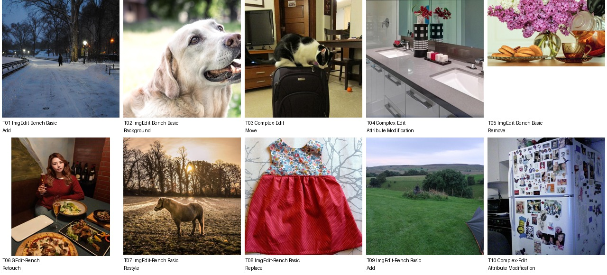

Xandro Panganiban从事市政道路桥梁协调，已有女友、幼儿、两只宠物和浴室更新计划。按需要将既有两只宠物落实为金毛Sunny与黑白猫Pip，不额外增加第三只；并轻量匹配浴室材质、家庭出行和日常餐照。
Utility coordination specialist for municipal bridge and roadway projects · Bachelor's degree in Civil Engineering · 未提供数值年龄；按职业与教育背景推定为成年人
Xandro spends most workdays tracking water-main conflicts and lane-closure schedules for bridge repair crews, then comes home to a girlfriend, a potty-training toddler, and two pets who dominate his camera roll. He decompresses with cat puns, Golden Retriever clips, piano covers, and occasional Phillies highlights, while quietly keeping tabs on Noah Wyle buzz and TV limited-series recommendations. On weekends he is slowly planning a practical bathroom refresh, mostly because the old grout annoys him more than he admits. A surprising obsession of his is collecting tiny vintage transit tokens from cities he has never visited.
Add 3 · Background 5 · Move 1 · Attribute Modification 5 · Remove 2 · Replace 2 · Retouch 1 · Restyle 1
本轮每条2个独立原子操作，允许范围2–3，不按上限凑数；当前命令隐藏结果值与方向。新增动物仅为图中干扰候选，不登记为用户宠物。源图与命令均可查看前后对照，等待本轮人工审核；长期日常历史尚未生成。 所有实体和偏好仍为构建稿，尚无长期历史或编辑结果。
上层v3表达个性化编辑请求，底层列出操作、个性化参数及具体解析。125项global均不绑定题材或具体图片，由请求选择；人物基本信息、非global知识和图片保持不变。历史版本仅存internal；长期日常历史尚未构建。
整组图片与基础人物信息（已清理、统一字段）

{
"source": {
"dataset": "bowen-upenn/PersonaMem-v3",
"revision": "7b00a090b35b7293e6efeeb19494207f32b5a9ee",
"source_persona_id": "108",
"path": "backend/108/profile.json",
"raw_sha256": "5b1abfdab4b231275ef1689b95226503d5be49020e13e3cbe478347bff7a6c42"
},
"basic_profile": {
"name": "Xandro Panganiban",
"age": null,
"gender": "transgender male, heterosexual",
"nationality": null,
"languages": [],
"location": {
"city": null,
"region": null,
"country": null,
"description": null
},
"education": {
"degrees": [
"Bachelor's degree in Civil Engineering"
],
"fields": [],
"institutions": []
},
"occupation": {
"title": "Utility coordination specialist for municipal bridge and roadway projects",
"organization": null,
"industry": null,
"status": null
},
"relationship_status": null,
"summary": null,
"biography": "Xandro spends most workdays tracking water-main conflicts and lane-closure schedules for bridge repair crews, then comes home to a girlfriend, a potty-training toddler, and two pets who dominate his camera roll. He decompresses with cat puns, Golden Retriever clips, piano covers, and occasional Phillies highlights, while quietly keeping tabs on Noah Wyle buzz and TV limited-series recommendations. On weekends he is slowly planning a practical bathroom refresh, mostly because the old grout annoys him more than he admits. A surprising obsession of his is collecting tiny vintage transit tokens from cities he has never visited.",
"hobbies": [],
"personality": {
"traits": [],
"values": [],
"quirks": [],
"big_five": {
"openness": "medium",
"conscientiousness": "medium",
"extraversion": "low",
"agreeableness": "high",
"neuroticism": "high"
}
},
"additional": {
"social_connections": [
{
"friend_id": "friend_1",
"display_name": "Xavier Pascual",
"relationship_depth": "close",
"shared_interests": [
"Phillies highlights",
"bridge repair projects",
"Golden Retriever clips"
]
},
{
"friend_id": "friend_2",
"display_name": "Maricel Poblete",
"relationship_depth": "close",
"shared_interests": [
"parenting",
"pet photos",
"bathroom refresh ideas"
]
},
{
"friend_id": "friend_3",
"display_name": "Paolo Punzalan",
"relationship_depth": "close",
"shared_interests": [
"piano covers",
"cat puns",
"TV limited series"
]
},
{
"friend_id": "friend_4",
"display_name": "Xiomara Palisoc",
"relationship_depth": "acquaintance",
"shared_interests": [
"red-carpet creators",
"Noah Wyle buzz"
]
},
{
"friend_id": "friend_5",
"display_name": "Lito Penaflor",
"relationship_depth": "acquaintance",
"shared_interests": [
"lane-closure schedules",
"local community updates"
]
},
{
"friend_id": "friend_6",
"display_name": "Xavier Peralta",
"relationship_depth": "acquaintance",
"shared_interests": [
"urbanism",
"transit posts",
"sports highlights"
]
},
{
"friend_id": "friend_7",
"display_name": "Trixie Policarpio",
"relationship_depth": "acquaintance",
"shared_interests": [
"pet accounts",
"cat puns",
"family photos"
]
},
{
"friend_id": "friend_8",
"display_name": "Noel Padilla",
"relationship_depth": "distant",
"shared_interests": [
"municipal projects",
"roadway updates"
]
},
{
"friend_id": "friend_9",
"display_name": "Bianca Pineda",
"relationship_depth": "distant",
"shared_interests": [
"animal conservation",
"Golden Retriever clips"
]
},
{
"friend_id": "friend_10",
"display_name": "Jun Paez",
"relationship_depth": "distant",
"shared_interests": [
"Phillies highlights",
"TV recommendations"
]
}
]
}
},
"adult_eligibility": {
"status": "adult",
"basis": "adult_career_and_education_context",
"inferred": true,
"numeric_age_provided": false
},
"persona_id": "persona_005"
}